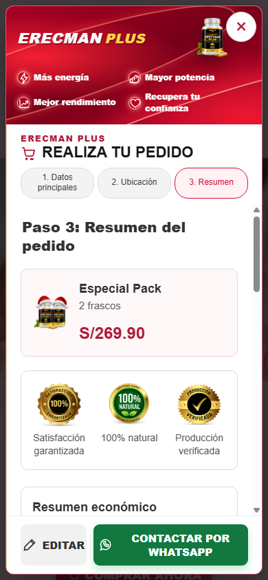
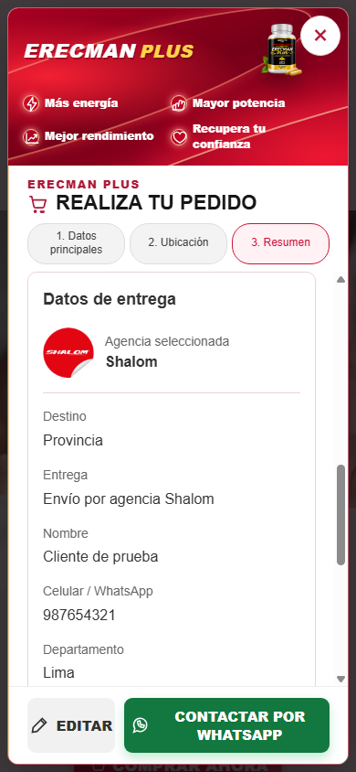
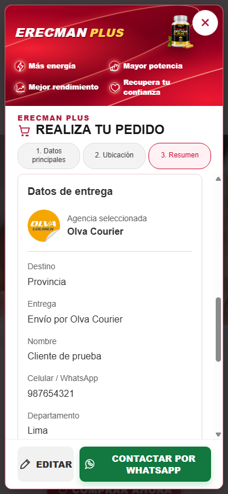

Sellos y agencia en el resumen
Se reutilizan las imágenes actuales de la landing. El logo de entrega cambia con la agencia seleccionada. Domicilio está disponible solo en Lima.
Probar formulario · 79 comprobaciones correctas · 15 pruebas funcionales correctas
Sellos del producto

Agencia Shalom

Olva Courier
